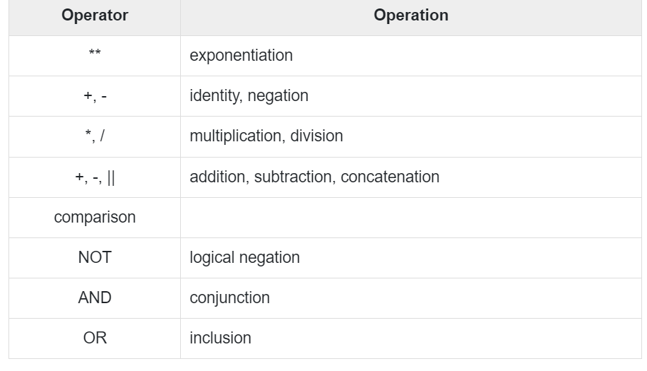

Operator precedence determines the grouping of terms in an expression. This affects how an expression is evaluated. Certain operators have higher precedence than others; for example, the multiplication operator has higher precedence than the addition operator.
For example, x = 7 + 3 * 2; here, x is assigned 13, not 20 because operator * has higher precedence than +, so it first gets multiplied with 3*2 and then adds into 7.
Here, operators with the highest precedence appear at the top of the table, those with the lowest appear at the bottom. Within an expression, higher precedence operators will be evaluated first.
The precedence of operators goes as follows: =, <, >, <=, >=, <>, !=, ~=, ^=, IS NULL, LIKE, BETWEEN, IN.
